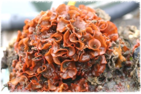

About Us

Comprehensive technical and policy support for your company’s energy and environmental projects
SeaJay Environmental is a woman-owned, small business consulting firm that specializes in analyzing energy and environmental policies, providing regulatory compliance support, preparing environmental impact assessments, storm water monitoring, pollution prevention planning, stakeholder engagements, workshop facilitation, and other direct project management support.
SeaJay Environmental provides high quality, time sensitive and cost-effective services to clients. We have served government agencies, non-profit organizations and commercial entities since our founding in 2007.
SeaJay Environmental also works with a network of environmental experts across the sciences and engineering disciplines to meet the demands of more complex projects while maintaining value and responsiveness to clients. This effective operating model is very conducive to providing high quality services without excessive overhead.
Environmental Consulting
San Francisco Estuary Institute
Led a water quality monitoring team to collect watershed samples as part of the James V. Fitzgerald Project Area of Special Biological Significance Pollution Reduction Program. The data were used to evaluate differences in contaminant concentrations from stormwater discharges into this marine reserve. The reserve is recognized as one of the richest, most biodiverse intertidal environments on the California coast.
Greater Farallones National Marine Sanctuary
Contractor to the sanctuary providing permitting support related to proposed research, education and salvage projects. Also coordinating the White Shark Stewardship Program, attending GFNMS and community meetings, and assisting with other resource protection activities such as helping to develop modifications to the San Francisco Traffic Separation Scheme and responding to vessel groundings.
National Marine Fisheries Service Office of Protected Resources.
Created a SQL database to support and analyze Automatic Information System (AIS) data that were used to assess the effectiveness of a rule requiring vessels 65 feet and greater in length to slow their speeds to 10 knots or less near key port entrances along the U.S. Eastern seaboard and in certain North Atlantic right whale aggregation sites known as Seasonal Management Areas. Monthly reports were also sent to seventeen international shipping companies to help them ensure compliance of United States law within their fleets.
Smithsonian Environmental Research Center
Provided dive support for an invasive species survey in the kelp forests between Monterey and Carmel, California, and within the Monterey Bay National Marine Sanctuary. Counted invasive species (primarily Watersipora) in 1-meter quadrats along transect lines.

Invasive bryozoan, Watersipora subtorquata, in Monterey Bay, California. (Photo by Steve Lonhart)
Energy Policy
Shell Exploration & Production Company
On-call consultant providing regulatory support and conducting research on various topics (e.g., marine sound, protected species, air and water permitting, proposed federal regulations, artificial reefs) pertinent to Shell’s domestic offshore oil and gas activities.
Offshore Operators Committee
Organized an industry workshop to better understand the scope of medical evacuation assets, practices, and available procedures in federal waters of the Gulf of Mexico. Then prepared the workshop report on best management practices and gaps. Organized another workshop on sandblasting and surface coating operations in the marine environment. The purpose of that workshop was to obtain best management practices from offshore operators and their contractors related to procedures used to minimize the discharge of spent blast abrasives and paint overspray in the Gulf of Mexico.
Walsh Perú S.A.
Prepared a regulatory document summarizing the applicable international legal framework pertaining to the discharge of drill cuttings containing non-aqueous drilling residues and issues related to the potential use of thermal-treatment technology to clean those cuttings.
O’Brien’s Response Management
Provided incident response support for the Enbridge pipeline spill in Michigan. Evaluated proposed oil treatment options for environmental effects on marsh and wetland habitats. Prepared standard operating procedures for sediment curtains and gabion boxes; and for site preparation, soil removal and disposal activities of contaminated sediments. Also reviewed quality assurance plans.

Industry-Government dive expedition to Flower Garden Banks National Marine Sanctuary in the Gulf of Mexico, and to High Island 389-A platform, which is being considered for decommissioning as a possible artificial reef. (Photo by Carliane Johnson)
Carliane Johnson
As the owner and principal consultant for SeaJay Environmental, Carliane brings more than 25 years of experience in energy policy, regulatory support and environmental consulting.
Carliane received her B.Sc in Biology and Chemistry from Florida State University, Tallahassee, Florida. She is trained and certified as a science diver under the NOAA Diving Program, and as a search and recovery diver for the Alameda County (CA) Sheriff’s Department. She is certified as a Protected Species Observer through training provided by Geo-Marine, Inc. in Plano, Texas, in 2012.
Carliane is also an experienced sailor and solo racer with her 38-foot sailboat, Kynntana.